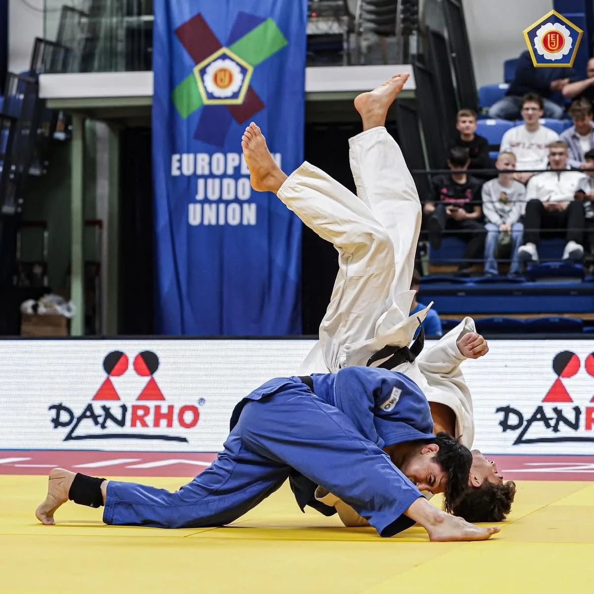
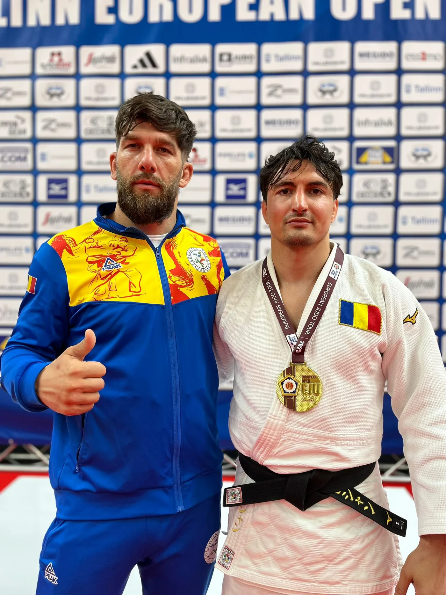
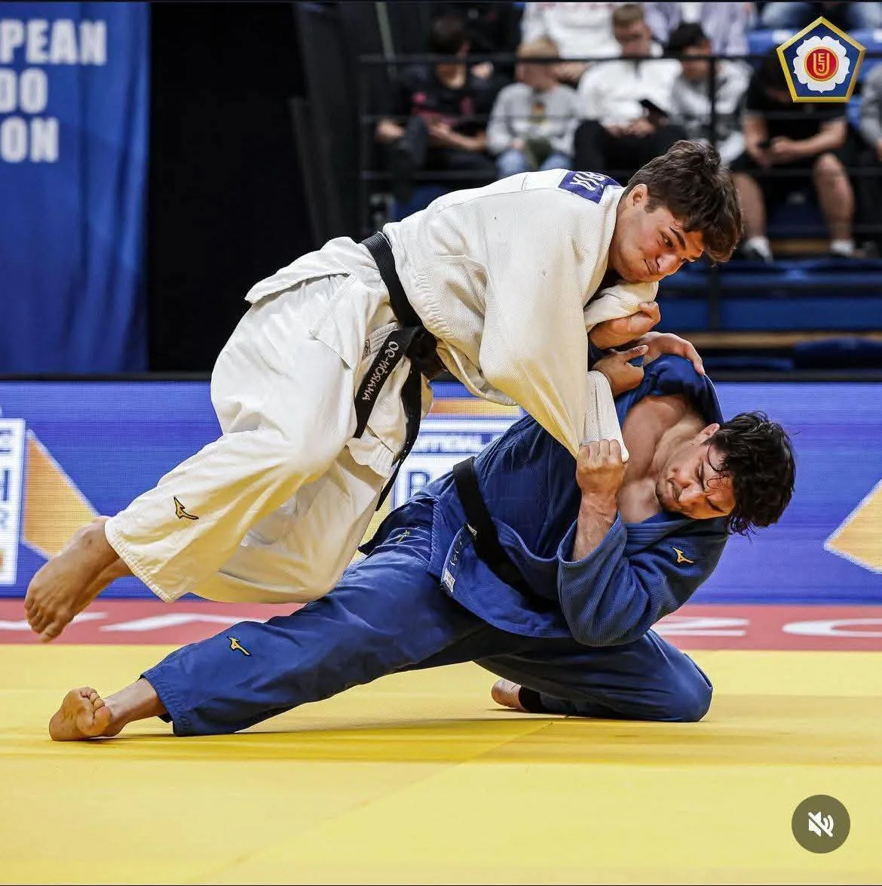

Judo
De la prima ukemi la ippon: tehnică, echilibru și respect pe tatami.
Judo la CSM Slatina
„Calea blândeții" își face ucenicii puternici: secția de judo a CSM Slatina formează sportivi care folosesc tehnica, echilibrul și inteligența în locul forței brute. Judoka noștri urcă pe podiumurile competițiilor naționale de copii și juniori.
Judo-ul dezvoltă coordonarea, disciplina și respectul față de partener. Copiii pot începe de la 5–6 ani, învățând mai întâi căderile și jocurile de luptă, apoi tehnicile de aruncare și imobilizare, pas cu pas, de la centura albă în sus.
Vino la un antrenament →Unde ne antrenăm
Sala de arte marțiale CSM Slatina
Program antrenamente
Programul grupelor este stabilit la începutul fiecărui sezon. Contactează secția pentru orarul curent.
Înscrieri
Telefon: 0349 738 657
E-mail: csmslatina@yahoo.com
Secția în imagini


